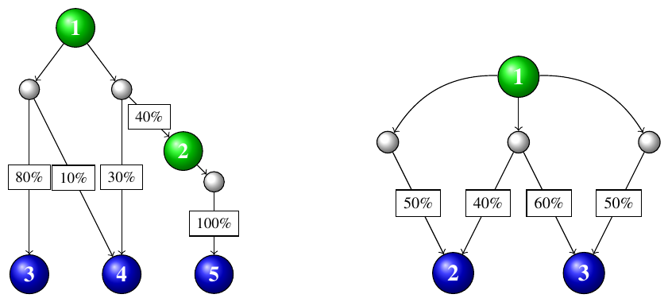

49th ICPC World Championship · Problem C
The story continues! For several years now, your town has been gifted with an abundance of Flubber, the adorable-but-slightly-flammable-and-toxic-and-acidic-and-sentient-and-mischievous man-made chemical. The search continues for more (or, well, any) uses for the substance. But in the meantime, the Flubber factory continues to produce it at full capacity. Efforts to shut it down have failed, partly because nobody is sure who is actually running the factory.
You’ve been tasked with storing the perpetually-flowing Flubber in various Flubber reservoirs for future use (or, at least, to get it out of everyone’s hair – literally). To accomplish this, you have access to a complicated network of Flubber ducts, connecting up various Flubber stations and reservoirs.
Every Flubber station has one or more Flubber ducts leading from it, and has various gates that may be raised or lowered so that incoming Flubber will drain into the output Flubber ducts in any desired proportion. For instance, you can send all the Flubber down one duct, or split it between two ducts 25–75, etc.
In contrast, a Flubber duct flows down to one or more lower stations or reservoirs, but the Flubber drains into them in a fixed proportion that you do not control. It is possible that some of the Flubber is lost to the environment as well, but that is a problem for your successor, not you.
You would like to fill all the reservoirs as quickly as possible. That is, you want to maximize the minimum amount of Flubber flowing into any of the reservoirs, among all possible configurations of station drainage.
Figure C.1 illustrates the two sample inputs. Stations and reservoirs are shown as numbered nodes, colored green for stations and blue for reservoirs. Ducts are depicted as white nodes. For example, in the first sample input (left), Flubber can be sent from station 1 in any proportion to its two downstream ducts, but each duct will distribute its inflow according to the percentages printed on its outgoing edges.

The first line of input contains three integers s, r, and d, where s (1 ≤ s ≤ 10 000) is the number of stations, r (1 ≤ r ≤ 3) is the number of reservoirs, and d (s ≤ d ≤ 20 000) is the number of ducts. The stations are numbered from 1 to s and the reservoirs are numbered from s + 1 to s + r, in decreasing order of altitude. The factory’s Flubber initially flows into station 1.
Each of the remaining d lines starts with two integers i and n, where i (1 ≤ i ≤ s) is the station that can drain into this duct, and n (1 ≤ n ≤ 10) is the number of outputs of this duct. The remainder of the line contains n pairs of integers o and p, where o (i < o ≤ s + r) is a station or reservoir to which this duct drains, and p (1 ≤ p ≤ 100) is the percentage of the Flubber entering the duct that will drain to o. The o values for a given duct are distinct. Every station has at least one duct that it can drain into. The percentages for a given duct’s outputs will sum to at most 100.
Output a single percentage f, which is the highest possible percentage such that, for some configuration of station drainage, all reservoirs receive at least f % of the factory’s produced Flubber. Your answer should have an absolute error of at most 10−6.
2 3 3 1 2 3 80 4 10 1 2 2 40 4 30 2 1 5 100
24.0
1 2 3 1 1 2 50 1 1 3 50 1 2 2 40 3 60
42.8571428571